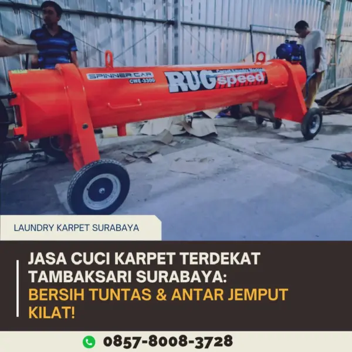
Jasa Cuci Karpet Rumah Tambaksari & Pacarkembang
Sibuk bekerja dan tidak sempat mencuci karpet tebal? Kami tuntaskan debu tersembunyi yang memicu alergi bayi. Antar jemput gratis.
Pesan LayananSpesialis Laundry Karpet Surabaya dengan Mesin Ekstraksi Vakum Industri. Proses kilat 1-3 hari, bergaransi 100%, dan GRATIS Antar Jemput se-Surabaya.
Ambil Promo Gratis Antar Jemput Sekarang🤧 Sering bersin atau gatal saat bersantai di atas karpet rumah?
☕ Pusing melihat noda tumpahan kopi yang membandel di karpet kantor?
🌧️ Repot mencuci sendiri tapi takut karpet bau apek karena tidak kering maksimal?
Karpet kotor bukan hanya merusak estetika ruangan, tapi juga menjadi sarang jutaan tungau dan debu mematikan yang mengancam kesehatan pernapasan keluarga serta produktivitas karyawan Anda.
Kami hadir meringankan beban Anda. Tidak perlu capek sikat manual, biarkan teknologi dan tim ahli kami yang bekerja.
Duduk manis di rumah, armada kami siap menjemput dan mengantar kembali karpet Anda untuk seluruh rute wilayah Surabaya.
Bukan disikat manual! Kami menggunakan mesin ekstraksi vakum bertenaga tinggi untuk menyedot kotoran dari serat terdalam.
Butuh cepat untuk acara keluarga atau meeting kantor? Tersedia layanan Express untuk kebutuhan mendesak Anda.
Kami berikan garansi cuci ulang. Jaminan karpet kembali dalam keadaan bersih, harum paripurna, halus, dan suci untuk ibadah.
Kualitas laundry karpet premium tidak harus mahal. Layanan profesional kami dimulai dengan tarif sangat terjangkau dari Rp 15.000/m².
Chemical ramah lingkungan yang kami gunakan efektif membunuh tungau debu (dust mites) dan menghilangkan bau apek seketika.
Pilih kategori layanan yang sesuai dengan jenis properti Anda. Kami siap meluncur ke titik penjemputan.

Sibuk bekerja dan tidak sempat mencuci karpet tebal? Kami tuntaskan debu tersembunyi yang memicu alergi bayi. Antar jemput gratis.
Pesan Layanan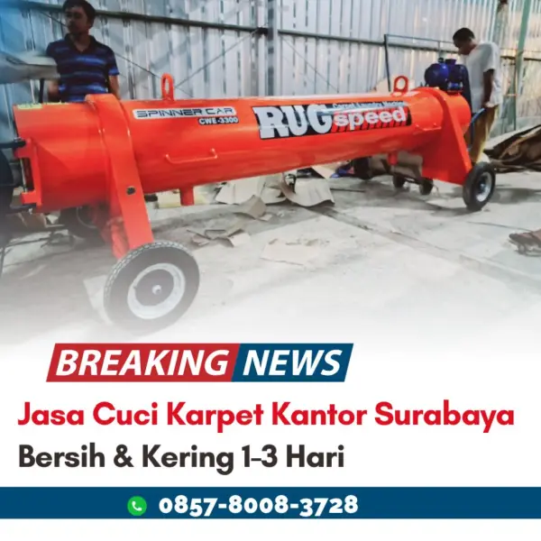
Tumpahan kopi dan noda membandel menurunkan produktivitas. Kami bersihkan karpet gulung kantor Anda dengan cepat tanpa ganggu jam kerja.
Konsultasi KantorBeban karpet masjid sangat berat. Kami sediakan armada angkut dan jaminan hasil cucian yang suci, harum, demi kenyamanan ibadah jamaah.
Layanan Masjid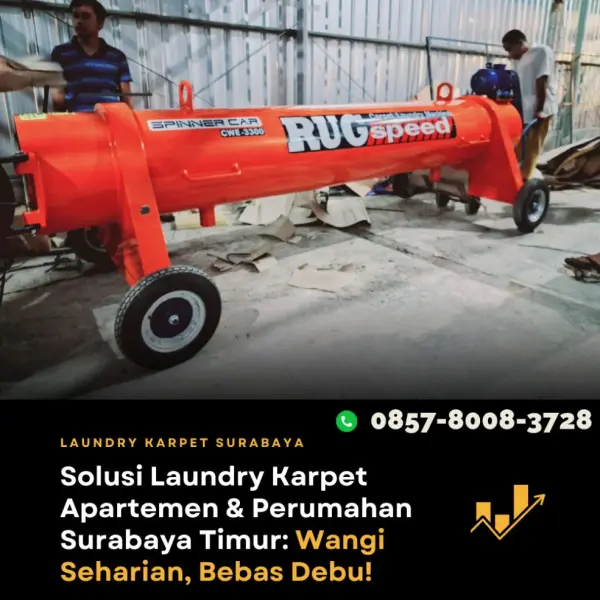
Repot membawa karpet turun lewat lift? Tidak ada lahan jemur? Tim kami jemput karpet ke unit apartemen Anda. Praktis dan bebas tungau.
Panggil Tim Rungkut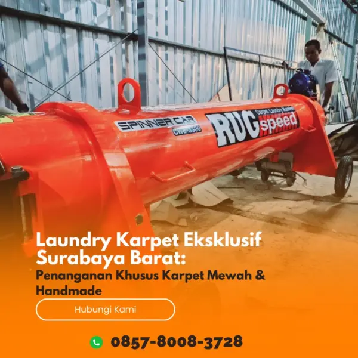
Jangan ambil risiko mencuci karpet mahal sembarangan. Teknik khusus kami memberi garansi tekstur karpet bulu/wol tetap sehalus baru dan tidak rontok.
Perawatan Premium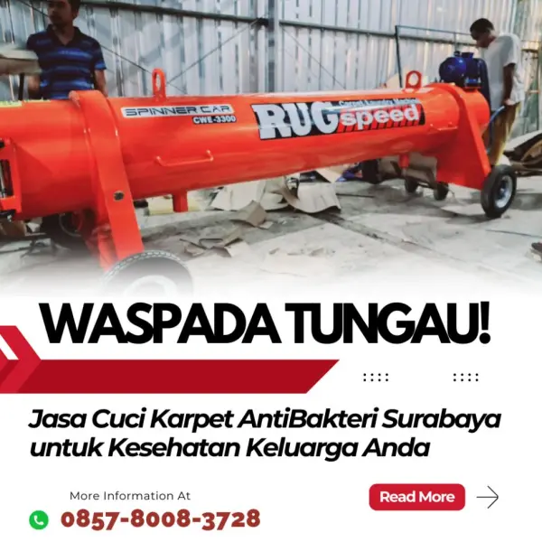
Kotoran intens dan bahan kimia butuh penanganan khusus. Mesin ekstraksi skala besar kami siap memproses karpet berukuran jumbo dari fasilitas pabrik Anda.
Hubungi Tim B2BKualitas cucian premium dengan harga yang masuk akal dan transparansi total.
Solusi Bersih & Bebas Tungau
"Layanan sangat memuaskan, tim responsif terhadap permintaan tambahan, sangat sigap. Terimakasih kak, karpet ruang tamu jadi wangi."

"Menyediakan layanan cuci karpet untuk proyek gedung. Pelayanan sangat baik, debu proyek hilang total."

"Layanan sangat memuaskan, tim responsif terhadap permintaan tambahan, sangat sigap. Terimakasih kak, karpet ruang tamu jadi wangi."
"Menyediakan layanan cuci karpet untuk proyek gedung. Pelayanan sangat baik, debu proyek hilang total."
"Layanan ramah dan karpet rumah jadi bersih maksimal. Kualitas mesin industri memang terbaik, mantap."

"Pelayanan cuci karpet apartemen terbaik. Wanginya awet banget dan timnya sigap jemput ke lobi."

"Layanan ramah dan karpet rumah jadi bersih maksimal. Kualitas mesin industri memang terbaik, mantap."
"Pelayanan cuci karpet apartemen terbaik. Wanginya awet banget dan timnya sigap jemput ke lobi."
"Pusat laundry karpet terlengkap! Mesin cucinya modern, pengerjaan cepat banget cocok buat karpet kantor."

"Responsivitas admin WA jempolan, ketepatan waktu antar jemput, karpet bersih maksimal. Nilai yang sangat memuaskan."
"Pusat laundry karpet terlengkap! Mesin cucinya modern, pengerjaan cepat banget cocok buat karpet kantor."
"Responsivitas admin WA jempolan, ketepatan waktu antar jemput, karpet bersih maksimal. Nilai yang sangat memuaskan."
Ribuan meter persegi karpet telah kami selamatkan dari noda dan tungau.
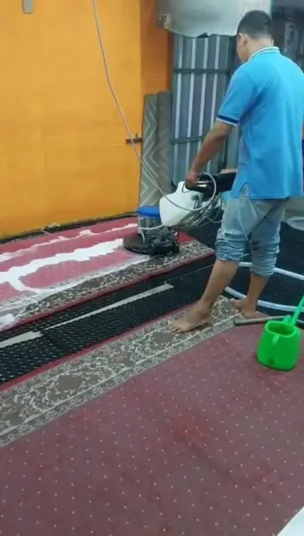
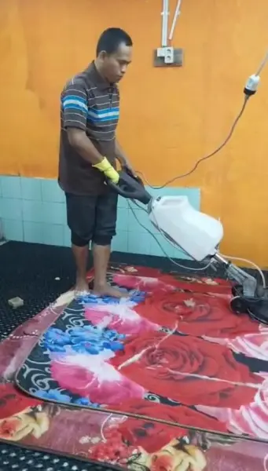
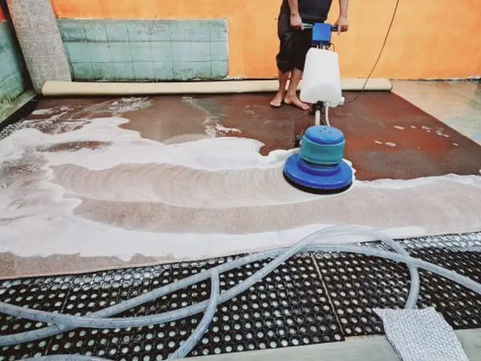
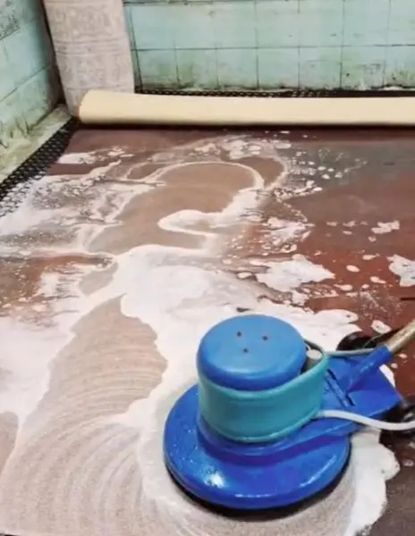
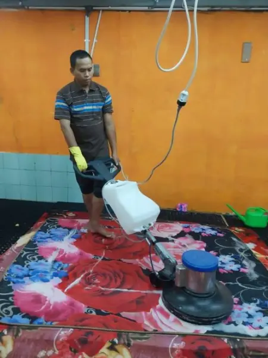
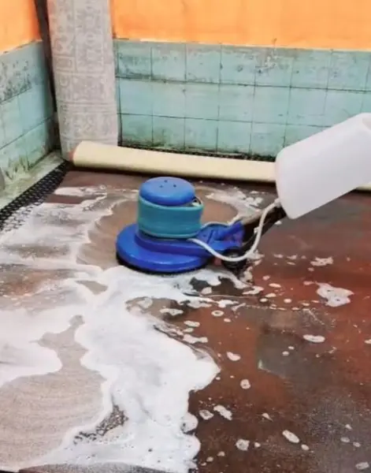
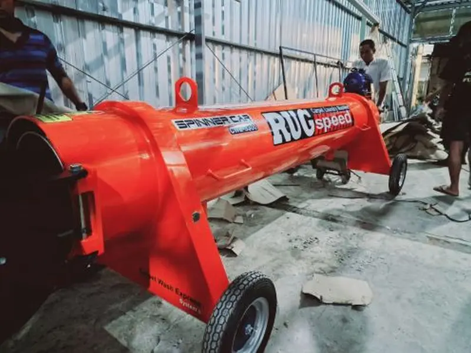
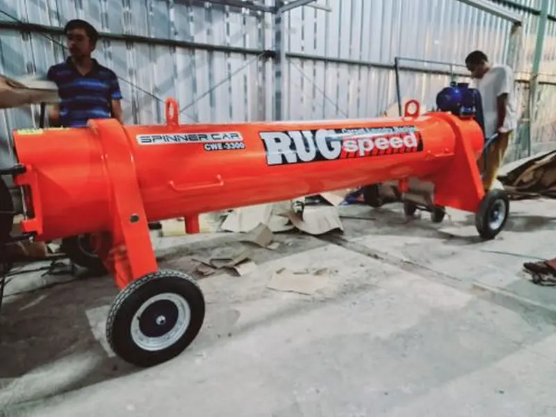
A: Sangat aman. Kami menggunakan teknik ekstraksi vakum khusus yang menjaga serat bulu tetap halus, fluffy, dan tidak rontok.
A: Kami memberikan free ongkir antar jemput untuk seluruh Surabaya. Silakan hubungi CS kami untuk detail minimal luasan karpet sesuai jarak wilayah Anda.
A: Sebagian besar noda (kopi, darah, tinta ringan) bisa pudar signifikan hingga hilang total. Hal ini sangat bergantung pada usia noda membandel tersebut dan jenis bahan karpet Anda.
Serahkan urusan capek cuci karpet kepada kami. Anda cukup santai, karpet kembali wangi.
Laundry Karpet Antar Jemput Surabaya
Jl. Pacarkembang 5/33 Kel. Pacarkembang, Kec. Tambaksari, Kota Surabaya, Jawa Timur.
Website Resmi
antarjemputkarpetsurabaya.com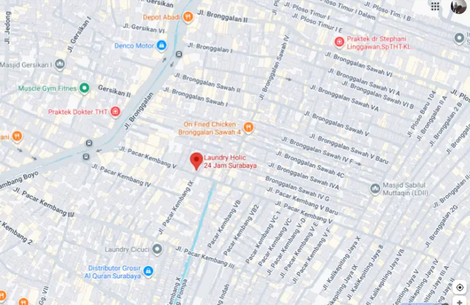